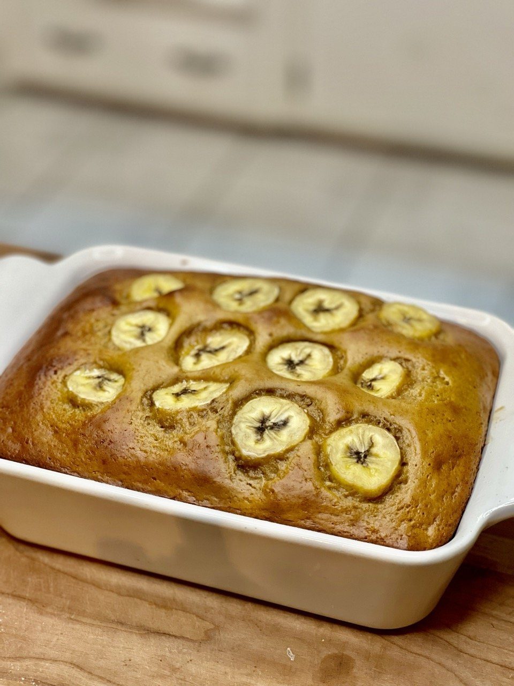

Peanut Butter Banana Bread

General Information:
High Protein Peanut Butter Banana Bread is a nutritious treat made with vanilla whey protein,
PB2 peanut butter mix, and mashed bananas. Each serving provides approximately 330 calories, 30 grams of protein,
37 grams of carbohydrates and 7 grams of fat.
Prep Time: 15 mins
Cook Time: 30 mins
Serving: 4
Ingredients:
- 30g vanilla protein powder
- 1 cup power flour or all purpose flour
- 3/8 cup PB2 peanut butter mix
- 1/2 cup zero-calorie sweetener
- 1 tbsp baking powder
- 1/2 tsp salt
- 2 eggs
- 1 cup unsweetened almond milk
- 2 mashed bananas
Instructions:
- Preheat your oven to 320°F
- In a large mixing bowl, combine power flour or all-purpose flour,
vanilla protein, PB2 peanut butter, zero-calorie sweetener, baking powder, and salt.
- In a separate bowl, beat the eggs and then add them to the dry ingredients.
- Add unsweetened almond milk to the mixture and stir until well combined.
- Mash two ripe bananas and fold them into the batter.
- Grease a bread pan and pour the batter into it. Optionally add extra sliced bananas on top.
- Bake in the preheated oven for 50-60 minutes or until a toothpick inserted into the center comes out clean.
- Allow the banana bread to cool before slicing. Optionally drizzle peanut butter mixture on top.
Return to homepage